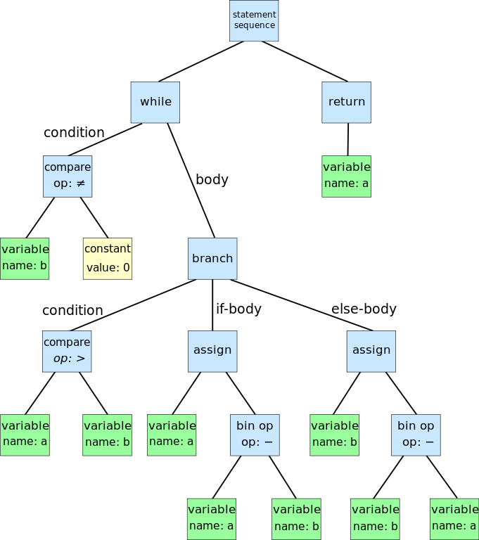
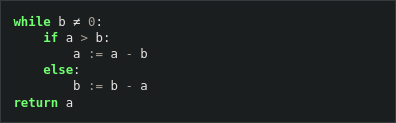

Grafos e Árvores
Árvores Binária de Busca
Árvores estão em todo lugar!


Fonte: https://commons.wikimedia.org/wiki/File:Abstract_syntax_tree_for_Euclidean_algorithm.svg
{kind=link}

Fonte: https://scikit-learn.org/stable/auto_examples/tree/plot_iris_dtc.html

Fonte: https://www.geeksforgeeks.org/search-algorithms-in-ai/
Árvores
Todos exemplos tem algumas características em comum:
- existe um nó especial chamado raiz, que é por onde começamos a analisar a árvore
- a distância de um nó até a raiz é chamada de altura do nó
- todo nó tem somente um predecessor direto, que é chamado de pai
- não há ciclos nem arestas entre nós de diferentes alturas
Representa ideias de hierarquia e ordenação

Fonte: https://www.geeksforgeeks.org/introduction-to-tree-data-structure-and-algorithm-tutorials/
Árvores de Busca Binária
Representam uma das seguintes ideias:
- conjunto (ordenado)
- array associativo (ordenado)
- coleção de dados que precise ser mantida ordenada

Árvores de Busca Binária
Dado um nó $x$ de nossa árvore,
- $x.left$ é o filho esquerdo de $x$. Se ele não existir seu valor é $NIL$
- $x.right$ é o filho direito de $x$. Se ele não existir seu valor é $NIL$
- $x.key$ é o valor que $x$ representa na árvore.
Propriedade básica da ABB
Para todo nó $x$ em uma ABB:
- $x.key \geq l.key$ para todo nó $l$ na subárvore esquerda de $x$
- $x.key \leq r.key$ para todo nó $r$ na subárvore direita de $x$
Operação Busca (query)
Validação

Quais são os valores possíveis para o nó "????" ?
Validação
Todo nó deve obedecer a propriedade básica!
Hoje + segunda
- Leitura do Handout
- Exercícios básicos no handout
- Busca e validação no PrairieLearn